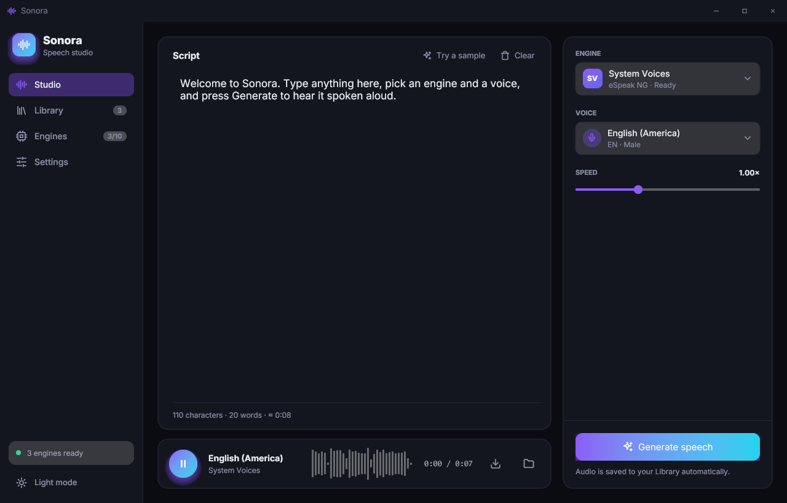
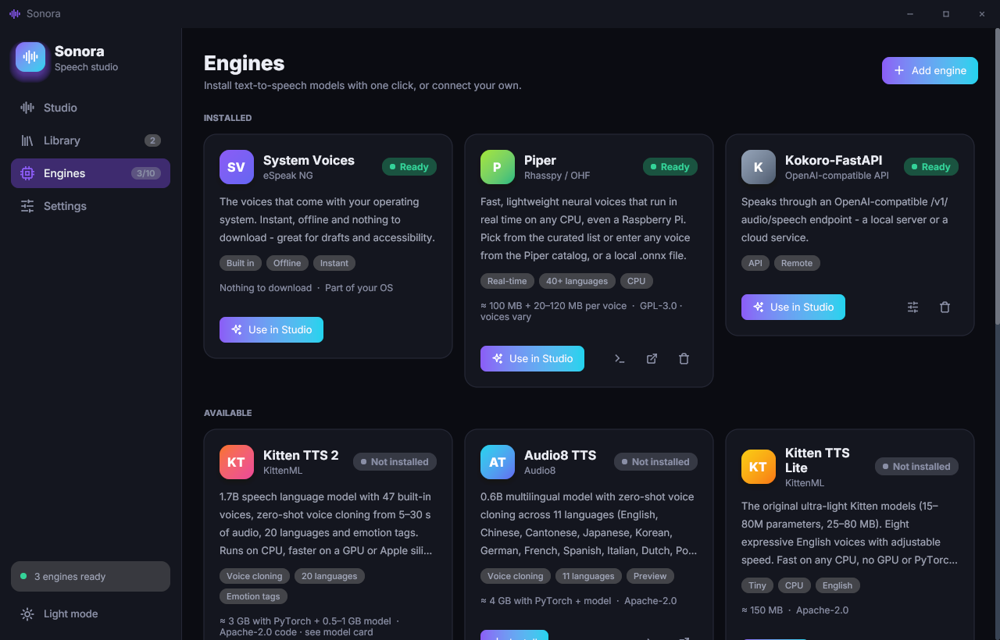
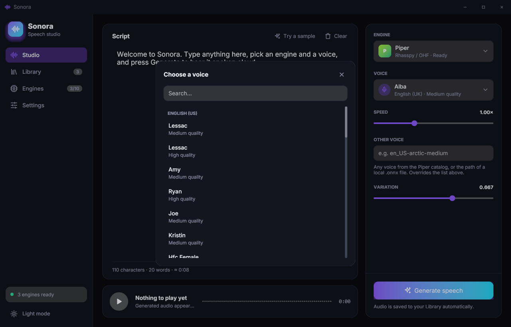
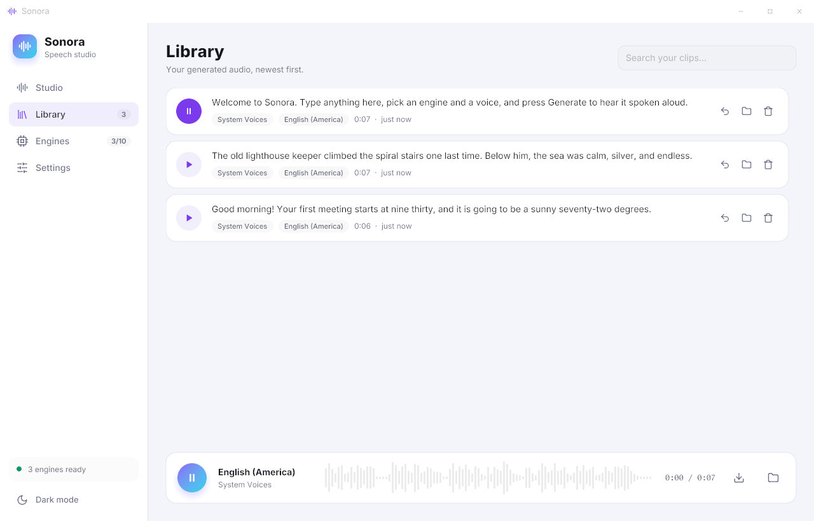

Sonora
A speech studio — text to speech and speech to text — with no code, no terminal and no Python setup.
Windows · macOS · Linux · Android
Words become a voice. A voice becomes words.
Sonora installs models like Kitten TTS 2, IndexTTS and Whisper with one click, keeps every clip and transcript, and can drive almost any other speech model.
Studio
Type or paste a script, pick an engine and a voice, press Generate speech.
- A large script editor, a searchable voice picker, speed control and every engine setting as a proper control.
- Open file loads text, Markdown, SRT, WebVTT, HTML, Word, OpenDocument, EPUB, PDF or RTF.
- A waveform player: click to seek, save as WAV, show in folder.
Transcribe
Pick an audio or video file, or record, and get an editable transcript with timestamps.
- Choose the language or let it be detected; translate into English.
- Copy, export or share as text or SRT subtitles, or send it to the Studio to be spoken.
- Every transcript is kept with its audio.
One-click engines
Sonora downloads its own Python (via uv), creates a private environment per engine, picks the right PyTorch for your GPU, and shows progress and logs while it installs.
Voice profiles & cloning
Record yourself reading one of 22 short texts, or import a recording of one person. Engines that clone — Kitten TTS 2, Audio8, IndexTTS, Chatterbox, Coqui, ZipVoice — speak in that voice.
Long recordings
Recordings stream straight to an Opus file as you speak. Pick the microphone, the quality (16 to 128 kbps) and the longest recording, from 15 minutes to 8 hours.
Library
Every clip is kept with its text, engine and voice. Search, replay, export or share it, or load a clip's settings back into the Studio.
Memory control
A model stays loaded between generations for speed; Eject stops its Python process and frees the RAM (or VRAM) whenever you want it back.
Drop and go
Drop audio or video on the window to transcribe it, or a document to load it as the script. Transcribe with Sonora and Read aloud with Sonora do the same from the file manager.
Dark and light, wide and narrow.
A frameless window with its own title bar, the Inter typeface and a violet-to-cyan accent. Narrow windows and phones get a single scrolling column with a bottom tab bar.




Many voices, many ears.
Built-in engines, Python plugins, API servers and command-line tools all appear in the same list and work the same way.
Text to speech
Speech to text
Each model has its own license (some, like XTTS-v2, are non-commercial). The engine card shows it; check it before commercial use.
Models that run on the phone itself, offline.
Install an on-device engine from the Engines page and Sonora downloads the model you pick — from 26 MB to about 2 GB, and nothing until you choose — then runs it with sherpa-onnx.
- ZipVoice clones a voice profile right on the phone.
- Piper has 74 voices in 33 languages; Whisper goes up to Large v3.
- Share a voice memo or video to Sonora to transcribe it, or a document to speak it.
Almost any speech model.
Built in
Install from the Engines page with one click; engines with models ask which to download.
A server you run
OpenAI-compatible speech and transcription APIs: Kokoro-FastAPI, LocalAI, a cloud API.
A program
A command-line template, like espeak-ng -w {output} -v {voice} -f {text_file}.
A Python model
An engine.json and a ~20-line adapter.py in the plugins folder.
Get Sonora
Grab the archive for your OS and CPU from the latest release and run it. The first time you install a Python engine, Sonora downloads its toolchain (~30 MB) by itself.
espeak-ng; file dialogs go through the desktop's XDG portal.xattr -dr com.apple.quarantine /Applications/Sonora.app once.ffmpeg lets Sonora read formats like M4A and video, and accept MP3/OGG from API servers and command-line tools.Built in Go, in the open.
Sonora is written in Go with giode and Gio — no webview. Read the code, file an issue, or build it yourself with Go 1.26+.
# build and run with the giode CLI $ git clone https://github.com/xmhrnx/sonora $ cd sonora && giode run
Your voice stays yours.
Sonora has no accounts, no analytics, no ads and no tracking. Its developer receives nothing from the app: not your text, your recordings, your transcripts or how you use it.
What stays on your device
Everything you make is kept in Sonora's data folder on your device, and nowhere else:
- your scripts, generated clips, recordings, transcripts and voice profiles;
- the engines, models and Python environments you install;
- your settings, including a Hugging Face token or API keys you enter (in
settings.json, as plain text).
Built-in and on-device engines run on your device: text and audio you give them don't leave it. Deleting Sonora's data folder (or uninstalling the app on Android, or the Microsoft Store version on Windows) removes all of it.
What goes over the network
Only downloads you start, and the servers you add:
- Installing an engine or model downloads it from GitHub, Hugging Face, the Python Package Index or PyTorch's download server. Those sites see your IP address, as with any download; a Hugging Face token you add is sent to Hugging Face for gated models.
- An API server or transcription API you add receives the text or audio you send it, with the API key you entered. That service's own privacy policy applies.
- Command-line engines and plugins you add run with what you give them; what they do is up to them.
Microphone and files
Sonora uses the microphone only while you record a voice profile or audio to transcribe, after the system asks you. It reads the files you open, drop or share to it, and saves only where you choose (on Android, Downloads/Sonora or the share sheet).
Notifications and children
Notifications are local: they tell you when a long job finishes. Sonora collects no personal data from anyone, children included, and shares or sells none.
Changes and contact
If this policy changes, the new version is published on this page with its date. Questions: open an issue at github.com/xmhrnx/sonora/issues.